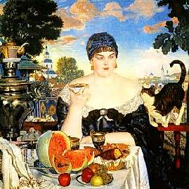
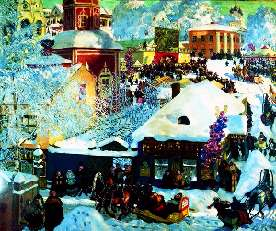

Борис Акунин
Мой календарь
Сегодня день рождения одного из самых любимых (кажется, всеми без исключения) русских художников - Бориса Кустодиева (1878 - 1927).
За оптимизм, аппетит к жизни, любовь к сочным, радующим глаз цветам и к полным женщинам современники называли его «русским Ренуаром» (которого мы с вами тоже недавно поминали).
Что Кустодиев, этот энтузиаст joie de vivre (радости жизни) именно русский, тут принципиально. Не потому, что Борис Михайлович писал дородных купчих и исконно-посконных крестьян, а потому что в России, особенно в те времена, сохранять любовь к жизни было очень непросто. Кустодиев воспевал жизнь не потому, что она была чудесна, а вопреки реальности.
Если посмотреть на годы, когда написаны его хрестоматийные, искрящиеся счастьем полотна, берет оторопь.
Вот картина 1918 года.
Вокруг гражданская война, тиф, голод и красный террор, нет уже ни купчих, ни пышно накрытых столов, а наш Ренуар продолжает видеть жизнь по-своему. И любить ее.
Помимо всего прочего Борис Михайлович был много лет мучительно, неизлечимо болен - во времена, когда практически отсутствовали лекарства и плохо работали больницы. Он и умер очень рано, в 48 лет.
По-моему, такая любовь к жизни стоит много дороже, чем у Ренуара.
Вот этому давайте у Кустодиева и поучимся.
Сегодня любуемся кустодиевскими картинами и декламируем стихотворение Юрия Левитанского: